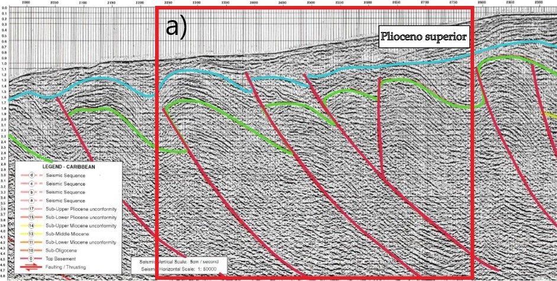
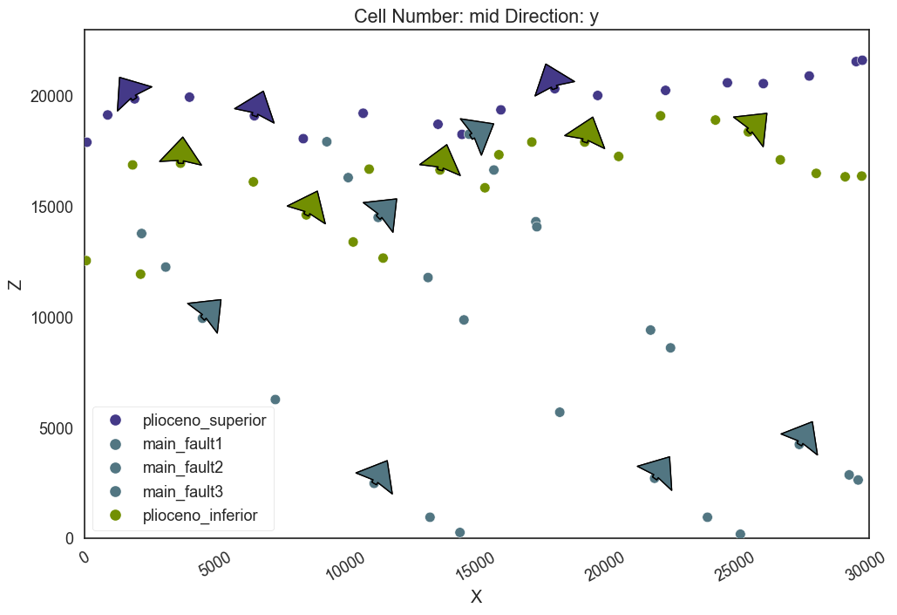

Desarrollo de modelos geológicos tridimensionales a partir de
información sísmica y cartográfica de la cuenca Sinú–San Jacinto,
mediante herramientas de modelamiento geológico computacional de libre acceso.
El trabajo incluyó la construcción de modelos geológicos y la
generación de modelos de distribución de velocidades asociados. Proyecto de investigación P3925 del grupo HDSP en el que participe como auxiliar de investigación.
Contexto del proyecto
El trabajo partió de la revisión del Atlas Sísmico de Colombia
y de la selección de zonas de interés en secciones sísmicas
y planchas geológicas de la cuenca Sinú–San Jacinto.
A partir de esta información se construyeron modelos
tridimensionales a escala utilizando GemPy, incorporando datos
geológicos y estructurales para representar la geometría
de las unidades y superficies interpretadas.
50Modelos geológicos desarrollados
3Ejemplos seleccionados para explorar
2Fuentes principales: atlas sísmico y cartografía geológica
Proceso de modelamiento
1
Selección de información
Identificación de zonas de interés en secciones
sísmicas y planchas geológicas.
2
Datos estructurales
Preparación de puntos y orientaciones estructurales para
representar las superficies geológicas.
3
Modelamiento 3D
Construcción de modelos geológicos y análisis
de sus campos escalares.
4
Modelo de velocidades
Generación de modelos de distribución de
velocidades asociados a cada modelo geológico.
Explorador de modelos
Explora tres ejemplos del trabajo de modelamiento.
Cada uno permite consultar la información de referencia,
los datos estructurales, el modelo escalar, el resultado
geológico tridimensional y su modelo de velocidades.
Modelo 01 · Sección sísmica
Visualización de las etapas de construcción del primer
modelo. La información específica de la línea y su
identificación podrá incorporarse posteriormente.

▧
Imagen pendiente: sección de referenciaUbicación: assets/images/projects/gempy/modelo-01/seccion-fuente.jpg
Sección sísmica utilizada como información de referencia
para la construcción del modelo.

▧
Imagen pendiente: puntos y orientacionesUbicación: assets/images/projects/gempy/modelo-01/puntos-orientaciones.jpg
Distribución de los puntos y orientaciones estructurales
utilizados para definir las superficies geológicas.
Nota: Los tres modelos presentados corresponden
a ejemplos seleccionados de un conjunto de 50 modelos desarrollados.
Las imágenes permiten consultar las diferentes etapas de
modelamiento, mientras que los notebooks (.ipynb) contienen el procedimiento
computacional correspondiente a cada ejemplo.